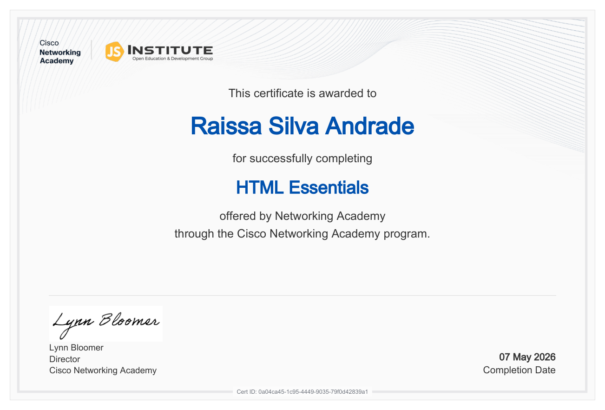
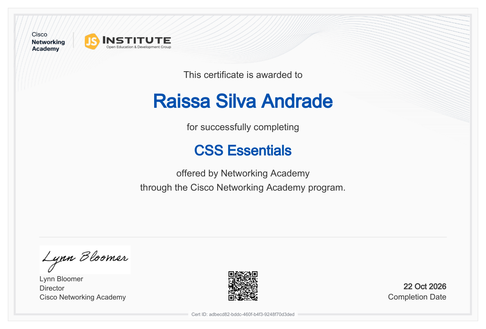
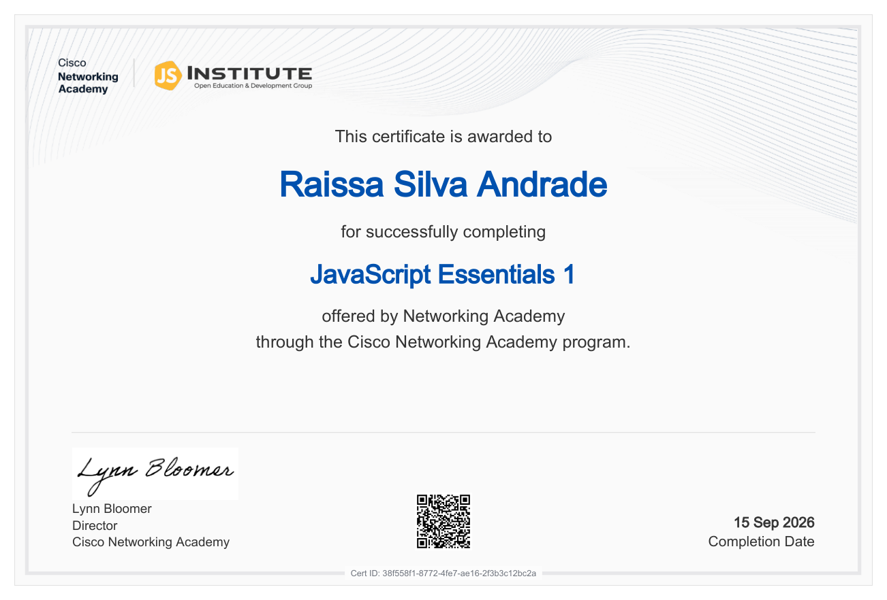
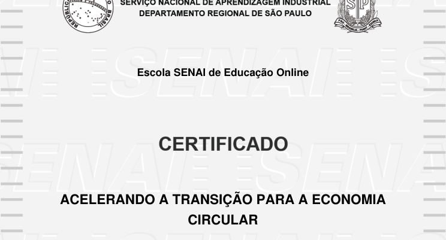
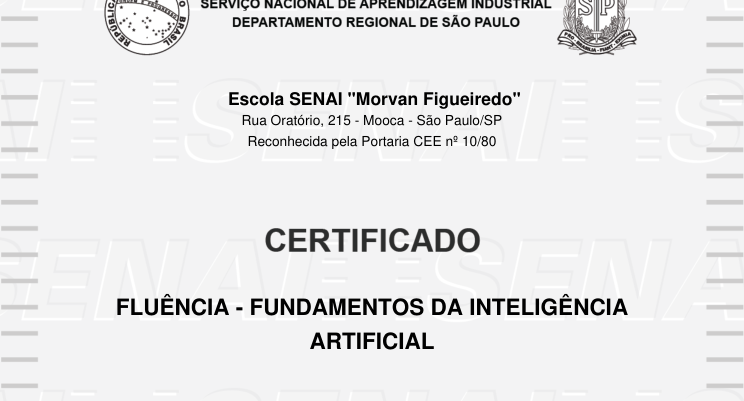
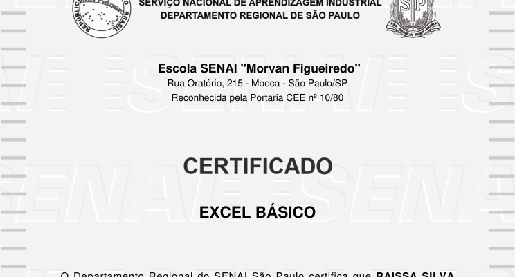
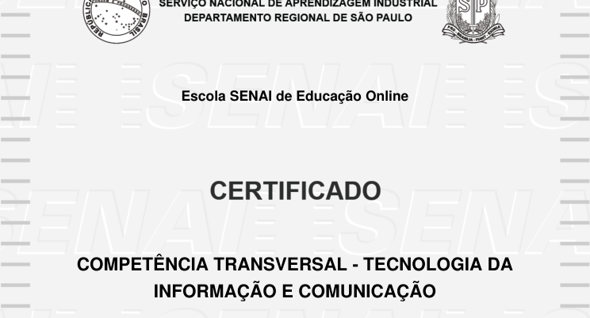
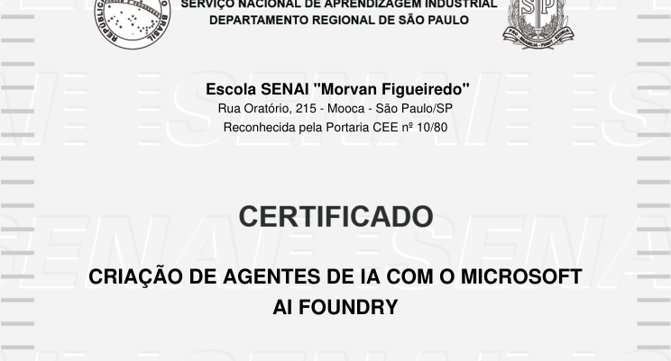
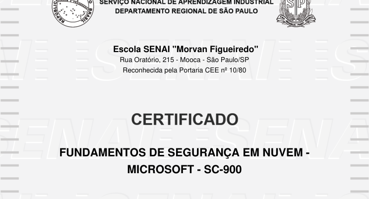
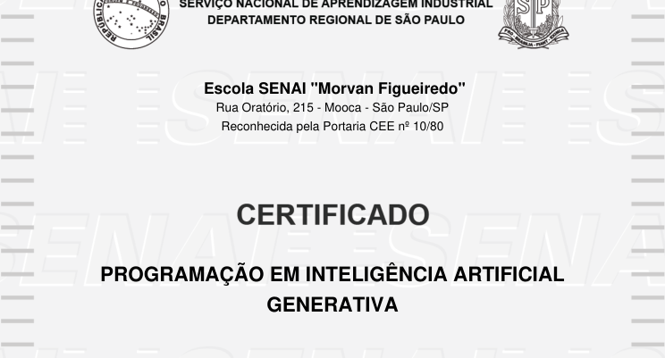

Desenvolvimento web · Cisco Networking Academy
HTML Essentials
Conclusão: 07/05/2026
04 · conquistas
Formações concluídas pelo SENAI e pela Cisco Networking Academy. Os documentos do SENAI estão disponibilizados em versões com o número de identidade oculto.
Novas conquistas
Certificados de conclusão dos cursos de fundamentos do desenvolvimento web. Os documentos não informam carga horária.

Desenvolvimento web · Cisco Networking Academy
Conclusão: 07/05/2026

Desenvolvimento web · Cisco Networking Academy
Conclusão: 22/10/2026

Desenvolvimento web · Cisco Networking Academy
Conclusão: 15/09/2026
Formação complementar
Oito cursos concluídos em tecnologia, inteligência artificial, segurança em nuvem, produtividade e sustentabilidade.

Sustentabilidade · SENAI
4 horas · Conclusão em 2026
Ver certificado ↗
Inteligência artificial · SENAI
8 horas · Conclusão em 2026
Ver certificado ↗
Produtividade · SENAI
20 horas · Conclusão em 2026
Ver certificado ↗
Tecnologia · SENAI
14 horas · Conclusão em 2026
Ver certificado ↗
Inteligência artificial · SENAI
40 horas · Conclusão em 2026
Ver certificado ↗
Computação em nuvem · SENAI
40 horas · Conclusão em 2025
Ver certificado ↗Computação em nuvem · SENAI
40 horas · Conclusão em 2026
Ver certificado ↗
Inteligência artificial · SENAI
40 horas · Conclusão em 2026
Ver certificado ↗